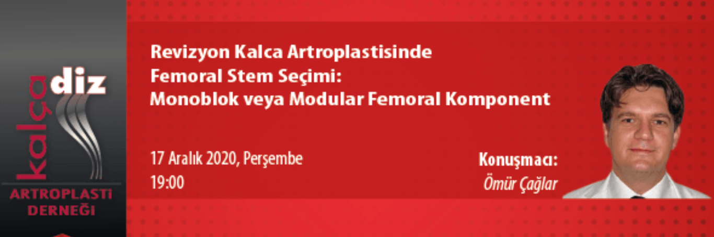

Webinar Kaydını izlemek için tıklayınız.

| Değerli Meslektaşlarımız, |
| Kalça Diz Artroplasti Derneği eğitim faaliyetleri içerisinde yer alan "Webinar" oturumu 17 Aralık 2020, Perşembe günü saat 19:00'da gerçekleştirilecektir. Moderatörlüğünü Ömür Çağlar'ın yapacağı webinarda “Revizyon Kalça Artroplastisinde Femoral Stem Seçimi: Monoblok veya Modular Femoral Komponent" konusunu ele alınacaktır. Webinar'a http://webinar.artroplasti.org.tr adresinden, bilgisayar ve mobil cihazlarınızla bağlanabilirsiniz. Bu eğitim yılı içinde düzenlediğimiz diğer webinarlarımızın kayıtları, portalımız www.artroplasti.org.tr üzerinden dernek üyelerimizin erişimine sunulmuştur. |
